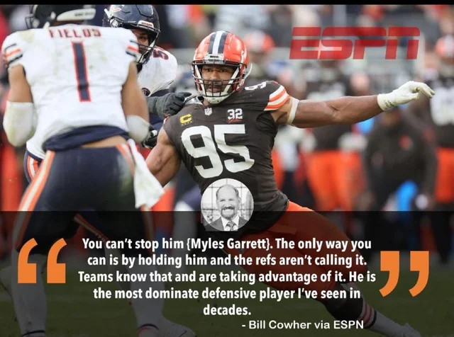

By Andrew McBride | Illustrations by ESPN Staff
All stats from NFL.com
To create their list, ESPN asked a panel of dozens of ESPN NFL experts to rate players based on performance expectations for the 2024 season compared with their peers. Emphasis was placed solely on the upcoming season and predicting potential greatness rather than on past performance or positional value. From those ratings, they ranked the 10 best players in the league. NFL Nation reporters weighed in on each player with a 2024 outlook.
But, I put my own twist on it. Sure, these are the top 10 players in the league. But why? Well, I pulled the most eye popping thing I could find about each player; whether it was leading in a statistic from the 2023 season or their careers, highlights that I could not stop watching, or a quote that I will never forget. Here is the list:
10. T.J. Watt
Edge, Pittsburgh Steelers

After he finished in the top two in voting for Defensive Player of the Year in three of the past four seasons, it's hard to overstate Watt's dominance. The game-wrecking outside linebacker led the league with 19 sacks last season. And despite missing nearly half of the 2022 season, Watt still leads the NFL with 47 sacks over the past three years. He's showing little sign of slowing down as he enters his eighth NFL season, and Alex Highsmith's continued development opposite of him only helps Watt's effectiveness. -- Brooke Pryor
9. Christian McCaffrey
Running back, San Francisco 49ers
In his first full season in San Francisco, McCaffrey won Offensive Player of the Year, which would seem to indicate it will be tough for him to be even better in 2024. But McCaffrey undoubtedly thinks otherwise. Although he led the NFL in touches (339) and scrimmage yards (2,023), McCaffrey dealt with injuries that prevented those numbers from being even bigger. He said he tries to "put my body, mind and soul in the best position to play every snap," and although the Niners would like to preserve him, they are undoubtedly much better with their do-it-all back in the game. -- Nick Wagoner
8. Tyreek Hill
Wide receiver, Miami Dolphins
He was the NFL's leading receiver from last season, and no player has more receiving yards than Hill since he joined the Dolphins in 2022. In that span, he has nine plays of 50 or more yards -- which is more than 24 teams have recorded. Hill was rewarded with a restructured contract this offseason, and he figures to once again be an integral part of the Dolphins' offense. -- Marcel Louis-Jacques
7. Micah Parsons
Edge, Dallas Cowboys
Parsons has finished in the top three in Defensive Player of the Year voting in his first three years and looks to have an expanded role in the defense under new coordinator Mike Zimmer. Parsons lined up predominantly as an edge player in 2022-23, but he has been moved to different spots under Zimmer to take advantage of matchups. Parsons dropped about 10 pounds to help his speed and quickness, but it does not appear to have impacted his strength. -- Todd Archer
6. Ja'Marr Chase
Wide reciever, Cincinatti Bengals

The Cincinnati coaching staff believes this could be an even bigger year for Chase. As he enters his fourth season, he not only has a full command of the offense but should be a more versatile part of it. With wide receiver Tyler Boyd gone , Chase will have the freedom to be used as an outside and inside receiver, which is something he wants to take his game to an All-Pro level. -- Ben Baby
5. Josh Allen
Quarterback, Josh Allen
Once again an MVP finalist in 2023, Allen has consistently proved over the past few seasons why he is one of the league's best quarterbacks -- setting records on the ground and through the air and leading the Bills to four straight division titles. "Gunslinger," new Bills veteran receiver Mack Hollins said of Allen . "He's the man. He can sling it. ... Obviously, he's a fun, playful guy. But he takes the game very seriously, and I respect that about him." Allen has new tests on his plate this season: working with only one wide receiver on the roster who has caught a pass from him in a game ( Khalil Shakir ) and becoming a more vocal leader. -- Alaina Getzenberg
4. Myles Garrett
Edge, Cleveland Browns

Garrett finally broke through in 2023, winning his first Defensive Player of the Year award. While teammates marvel at his physical abilities, Garrett focused on the mental side this offseason, studying film of how top rushers beat double-teams to adjust to the extra attention he'll see in 2024. His 16.8% pressure rate when double-teamed last season ranked fourth among edge rushers. -- Daniel Oyefusi
3. Justin Jefferson
Wide Reciever, Minnesota Vikings
Fresh off a $140 million contract extension that made him the highest-paid non-quarterback in the NFL, Jefferson has reached a bit of a career crossroads. He has hit his prime just as the Vikings have moved on from quarterback Kirk Cousins , the passer who threw 354 of his 392 career receptions. Jefferson might well be the best receiver of this generation, but continued statistical dominance -- and impact on the game -- will require a quick and productive transition to Sam Darnold , who will play in place of injured J.J. McCarthy . -- Kevin Seifert
2. Lamar Jackson
Quarterback, Baltimore Ravens
Jackson has been the best dual-threat quarterback in NFL history, leading the Ravens to an average of 28.3 PPG and 383.5 YPG through six seasons. Jackson dropped 15 pounds from last year to feel quicker, while picking up his strongest supporting cast yet. He has his first All -Pro running back in Derrick Henry , a healthy Mark Andrews at tight end and a fast-rising wide receiver in Zay Flowers. -- Jamison Hensley
1. Patrick Mahomes
Quarterback, Kansas City Chiefs
Mahomes is ranked No. 1 for the fifth straight year and looked energized enough at training camp to potentially reach a sixth straight in 2025. He described last season as no fun because of the struggles in the passing game, despite the Chiefs winning a second consecutive Super Bowl. Starting the upcoming season on the right track, he repeatedly pushed the ball down the field to speedy rookie Xavier Worthy during camp. His intent and resolve to change mistakes from last season seem clear. -- Adam Teicher